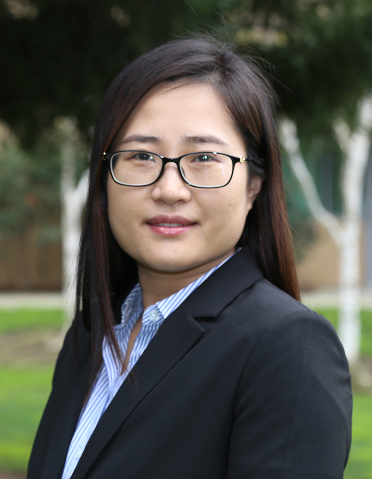

| Bo Chen | |
|---|---|
| Dr. Bo Chen is an Assistant Professor in the Department of Computer Science, Michigan Technological University. He received his B.E. degree from University of Science and Technology Beijing, China (2005), and his M.Eng. degree from University of Chinese Academy of Sciences, China (2008), both in Computer Science. He received his PhD in Computer Science from New Jersey Institute of Technology in 2014. Dr. Chen did his postdoc in Stony Brook University from 2014 to 2015 and Pennsylvania State University from 2015 to 2016, respectively. His current research is focused on applied cryptography and data security. Dr. Chen has published extensively (approximately 40) in prestigious academic conferences, journals, books, etc. These include top-tier security and privacy publication venues like ACM CCS, NDSS, AAAI, ACSAC, DSN, AsiaCCS, Journal of Computer Security. Dr. Chen received Outstanding Paper Awards from ACSAC 2017 and ACM CODASPY 2013, respectively. He has been serving as reviewers/program committee members for 30+ prestigious journals and conferences. | |
| Title: Towards Data Protection in Flash-based Solid State Storage | |
|
Abstract:
Modern mobile computing devices (e.g., smart phones, tablets, IoT devices) usually use flash memory as external storage. Compared to traditional mechanical disk drives, flash memory has some special characteristics: over-write can be performed only after an erasure has been performed; reading/programming operations can be performed on the basis of small pages, but erasing operations can only be performed on the basis of large blocks; flash memory cells can be programmed/erased for a limited number of times; etc. Protecting data stored in flash memory while being able to accommodate its special nature is very challenging.
This talk will introduce our recent research on ensuring confidentiality and integrity of data stored in flash memory. It will mainly discuss three questions: 1) How to ensure that data deleted by a mobile device owner are completely removed from the flash storage? 2) How to ensure confidentiality of the sensitive data stored in flash storage even when the mobile device owner is captured and coerced to disclose the key? 3) How to allow efficient data recovery in flash storage when the mobile device is compromised by malware. |
|
| Kai Chen | |
|---|---|
| Professor Kai Chen received his Ph.D. degree in the University of Chinese Academy of Science in 2010; then he joined the Chinese Academy of Science in January 2010. He became the Associate Professor in September 2012 and became the full Professor in October 2015. His research interests include software analysis and testing; smartphones and privacy. | |
| Title: System Security in AI Era | |
|
Abstract:
Patches and related information about software vulnerabilities are often made available to the public, aiming to facilitate timely fixes. Unfortunately, the slow paces of system updates (30 days on average) often present to the attackers enough time to recover hidden bugs for attacking the unpatched systems. We present SemFuzz, a novel technique leveraging vulnerability related text to guide automatic generation of PoC exploits. Such an end-to-end approach is made possible by natural-language processing (NLP) based information extraction and a semantics-based fuzzing process guided by such information. NLP also help us to understand the settings of mobile apps. Mobile apps include privacy settings that allow their users to configure how their data should be shared. These settings, however, are often hard to locate and hard to understand by the users, even in popular apps, such as Facebook. More seriously, they are often set to share user data by default. We report the first systematic study on the problem. |
|
| Jun Dai | |
|---|---|

|
Dr. Jun Dai is an Assistant Professor in the Department of Computer Science, as well as the Director of Center for Information Assurance and Security (CIAS) at California State University, Sacramento (Sac State). He holds a PhD in Information Sciences and Technology from Penn State University. His areas of research expertise include Intrusion Detection, Vulnerability and Malware Analysis, and Secure Programming. He teaches Network Security Computer Networking, and Operating System. Dai has rich experience in conducting research and teaching for Cyber Defense. His paper on “Path Identification for Zero-Day Attack” won the Best Paper Runner-up Award in IEEE CNS 2016. He co-coached a team representing Sac State to advance from 21 universities onto the Western Regional Cyber Defense Competition (WRCCDC) Final competition, and the team got ranked No. 2 in the “Best in Defense” Category. Before that it was ranked No. 1 during the WRCCDC invitational competition on Oct 13, 2018. The same team also won the No. 2 place in the Cyber Fire Challenge held on Sep 28-30, 2018. Dr. Dai has been a Technical Program Committee member, Manuscript Reviewer or Session Chair for more than 50 cybersecurity conferences and journals. As the Subject Matter Expert, Dr. Dai was part of the organization team for the California Cybersecurity Education Summit 2017 and 2018. |
| Title: Network-wide or App-specific Information Flow Monitoring and Tracking: Zero-day Attack Path Identification and Mobile App Data Leakage Detection | |
| Abstract: Detecting attacks and identifying their impacts/consequences in various networking environment is strategically necessary and critical for security defense. This talk is going to report two research efforts along this direction to address relevant issues. The first effort is to identify zero-day attack pathsin enterprise network environment, in which “zero-day attack path” refers to an attack path that goes through unknown security holes. It resulted in a prototype system named “Patrol”, which intercepts system calls and identifies zero-day attack paths at runtime, by building a network-wide system object dependency graph and capturing suspicious intrusion propagation paths in it through forward and backward tracking from intrusion symptoms. The second effort is to detect the potential malicious mobile applications that may cause data leakages in Android environment. Inspired by “Patrol”, implementation was taken to take advantage of the attack-neutral and hard-to-avoid system calls of the mobile system, reconstructing an activity graph for each application to reflect its interactions with the system. Both prototypes have been validated by our evaluation regarding effectiveness. | |
| Fengjun Li | |
|---|---|
| Dr. Fengjun Li is an Associate Professor in the Department of Electrical Engineering and Computer Science at the University of Kansas. She received B.E. degree (with honor) from the University of Science and Technology of China, M.Phil. from the Chinese University of Hong Kong and Ph.D. from the Pennsylvania State University. Her research interests lie in a broad area of security and privacy for cyber-physical systems, distributed information systems, communication networks and social networks. She has published over 40 refereed papers. Many of them are in top computer security and networking journals and conferences. Her research has been supported by funding agencies such as NSF and NSA. She has served on NSF panels multiple times and served as a steering committee chair, general chair, organizing committee member, TPC member, session chair, and reviewer for several international conferences and workshops. She is the recipient of the Kansas NSF EPSCoR First Award in 2014, the best paper award of SecureComm 2015, and the 2016 Miller Scholar Award of the University of Kansas. | |
| Title: Protecting Vulnerable IoT Devices via Multipath Onion IoT Gateways | |
| Abstract: The rapid expansion of IoT-enabled home automation is accompanied by substantial security and privacy risks. Recently, a large number of real-world security incidents have been reported regarding various vulnerabilities in IoT devices and applications. In this talk, I will present a novel design of onion IoT gateways to provide a strong security protection to a variety of IoT devices including the ones with known vulnerabilities. The main idea of our work is to construct multi-circuit anonymous tunnels between IoT devices and clients to hide potentially vulnerable IoT devices behind IoT gateways running the Tor hidden services. To reduce the bandwidth overhead to the Tor network, we also propose a lightweight design to split command and data channels so that the secure anonymous channel is only used for transmitting small-sized command packets, while high-bandwidth outbound data flows are still routed over the public network. Finally, I will discuss the implementation and evaluation of our multipath onion IoT gateways and show that they can be practically adopted to securely transmit low-latency and high-bandwidth data, such as HD video streams from home surveillance cameras. | |
| Jingqiang Lin | |
|---|---|
| Dr. Jingqiang Lin is a professor in Institute of information engineering, Chinese Academy of Sciences, deputy director of the State Key Laboratory of Information Security. He received his bachelor's degree in University of Science & Technology China in 2001 and received his master's and a Ph.D. degree in 2004 and 2009 respectively in Graduate University of Chinese Academy of Sciences. He published many papers in the top-ranking international conferences and journals, such as IEEE S&P, NDSS, AsiaCrypt, ESORICS, CHES, FSE, IPDPS, SRDS, ACSAC, RAID, IEEE TDSC, IEEE TKDE, IEEE TIFS, etc., including ACSAC 2017 Outstanding Paper and ISC 2014 Best Student Paper. He took charge of or participated in many foundation projects, such as NSFC, the national 973 Plan, the National 863 plan, the national science and technology support plan. Besides, he won the Zhu-Li-Yue-Hua Excellent Faculty award by the Chinese Academy of Sciences in 2017, the second place prize for cipher innovation of the Chinese cryptography society in 2016, the first place prize in cipher science and technology progress in 2015, the second place prize of national scientific and technological progress in 2005, and the second place prize of science and technology in Beijing in 2004. | |
| Title: Ticket Transparency: Accountable Single Sign-On with Privacy-Preserving Public Logs | |
| Abstract: Single sign-on (SSO) is becoming more and more popular in the Internet. An SSO ticket issued by the identity provider (IdP) allows an entity to sign onto a relying party (RP) on behalf of the account enclosed in the ticket. To ensure its authenticity, an SSO ticket is digitally signed by the IdP and verified by the RP. However, recent security incidents indicate that a signing system (e.g., certification authority) might be compromised to sign fraudulent messages, even when it is well protected in accredited commercial systems. Compared with certification authorities, the online signing components of IdPs are even more exposed to adversaries and thus more vulnerable to such threats in practice. This paper proposes ticket transparency to provide accountable SSO services with privacy-preserving public logs against potentially fraudulent tickets issued by a compromised IdP. With this scheme, an IdP-signed ticket is accepted by the RP only if it is recorded in the public logs.It enables a user to check all his tickets in the public logs and detect any fraudulent ticket issued without his participation or authorization. We integrate blind signatures, identity-based encryption and Bloom filters in the design, to balance transparency, privacy and efficiency in these security-enhanced SSO services. To the best of our knowledge, this is the first attempt to solve the security problems caused by potentially intruded or compromised IdPs in the SSO services. | |
| Bo Luo | - | |
|---|---|---|
| Bo Luo is a professor with EECS department at the University of Kansas. He is also the director of the Information Assurance Laboratory (IAL) at KU's Information and Telecommuni-cation Technology Center (ITTC). He received Ph.D. degree from The Pennsylvania State University in 2008, M.Phil degree from the Chinese University of Hong Kong in 2003, and B.E. from University of Sciences and Technology of China in 2001. His recent works mostly lie in the intersection of data science and privacy and security. Dr. Luo has published 70+ refereed papers, including ones in top conferences and journals such as IEEE Oakland, ACM CCS, ACM Multimedia, IEEE TKDE, IEEE TIFS, IEEE TDSC, VLDBJ, etc. He is also a co-founder of CANSec: Central Area Networking and Security Workshop (formerly KanSec: The Greater Kansas Area Security Workshop). He received the Miller Scholar award of University of Kansas in 2016 and 2017, and the Miller Professional Development Award in 2015. | ||
| Title: Privacy in social networks: from content understanding to content protection | ||
| Abstract: With the advances of information retrieval and data mining technologies, it becomes easier for malicious applications to pose real privacy threats on users of online social networks, who often disclose an enormous amount of personal/sensitive information online. We argue that contents such as user attributes and unstructured text messages are critical in privacy protection. In this talk, I will introduce our research efforts on social network content understanding the protection: (1) the risks associated with attributes and contents, in particular, attribute-reidentification attacks; (2) using a formal social circle model to examine privacy protection mechanisms of popular OSNs; (3) using multi-view and multi-task learning for social circle identification and user behavior prediction; and (4) automatic assessment of private/sensitive content. | ||
| Xiaoyan Sun | |
|---|---|
|  | Xiaoyan Sun is an Assistant Professor with Department of Computer Science, California State University, Sacramento. She received her Ph.D. degree in Information Sciences and Technology from the Pennsylvania State University in 2016. Her current research pursues enterprise-level cyber security defense based on vulnerability analysis, intrusion detection, and probabilistic uncertainty analysis, etc., with particular focus on identification of unknown attacks and revealing missing attack context. Based on her background in electrical engineering and intelligent transportation systems, she is also very passionate about security and forensics research in other related fields, such as IoT security, cloud security and attack impact analysis, etc. |
| Title: Gaining Big Picture Awareness in Enterprise Cyber Security Defense: Using Bayesian Networks to Capture the Uncertainties | |
| Abstract: Today’s enterprise network is usually under basic protection from security deployments like firewall and IDS. However, in many cases cyber security defense still fails unexpectedly, even if the security sensors have already provided relevant alerts towards ongoing attacks. In actual fact, the raised alerts are often easily ignored. One main reason for such failure is the existence of uncertainties, which leads to the lack of attack context. Attack context is essential for gaining big picture awareness towards the enterprise network’s actual situation. For example, given a number of security alerts, can we tell what’s going on in the network? In this talk, I will describe a set of security problems that are identified in revealing the missing attack context for enterprise cyber security defense, and introduce a family of systems developed to capture the uncertainties and tackle corresponding problems. In particular, I will mainly focus on the identification of zero-day attack paths in enterprise networks, and the inference of stealthy bridges in cloud. I will present two systems, ZePro and CloudBN, which both employ the Bayesian networks as the fundamental approach. | |
| Jun Xu | |
|---|---|

|
Jun Xu is an Assistant Professor in the Department of Computer Science at Stevens Institute of Technology. He received his PhD from Penn State University, with a focus on cyber security. His research spans the areas of software security, system security, and binary analysis. He has developed new methodologies and techniques for vulnerability finding, analysis, exploitation, and mitigation. His research has led to the discovery of hundreds of previously unknown security defects. Jun is a recipient of ACM CCS Outstanding Paper Award, Penn State Alumni Association Dissertation Award, and RSA Security Scholarship. |
| Title: SAVIOR: Towards Bug-Driven Hybrid Testing | |
|
Abstract:
Hybrid testing combines fuzz testing and concolic execution. It leverages fuzz testing to test easy-to-reach code regions and uses concolic execution to explore code blocks guarded by complex branch conditions. As a result, hybrid testing is able to reach deeper into program state space than fuzz testing or concolic execution alone. Recently, hybrid testing has seen significant advancement. However, its code coveragecentric design is inefficient in vulnerability detection. First, it blindly selects seeds for concolic execution and aims to explore new code continuously. However, as statistics shows, a large portion of the explored code is often invulnerable. Therefore, giving equal attention to every part of the code during hybrid testing is a non-optimal strategy. It also slows down the detection of real vulnerabilities by over 43%. Second, classic hybrid testing quickly moves on after reaching a chunk of code, rather than examining the hidden defects inside. It may frequently miss subtle yet exploitable vulnerabilities despite that it has already explored the vulnerable code paths. In this talk, I will present SAVIOR, a new hybrid testing framework pioneering a bug-driven principle. Unlike the existing hybrid testing tools, SAVIOR prioritizes the concolic execution of the seeds that are likely to uncover more vulnerabilities. Moreover, SAVIOR verifies all vulnerable program locations along the executing program path. By modeling faulty situations using SMT constraints, SAVIOR reasons the feasibility of vulnerabilities and generates concrete test cases as proofs. Our evaluation shows that the bugdriven approach outperforms the mainstream automated testing techniques, including the state-of-the-art hybrid testing driven by code coverage. On average, SAVIOR detects vulnerabilities 43.4% faster than DRILLER and 44.3% faster than QSYM, leading to the discovery of 88 and 76 more security violations, respectively. According to the experimental result on 11 well fuzzed benchmark programs, SAVIOR triggers 481 unique security violations within the first 24 hours. This work has been accepted to IEEE S&P 2020. |
|
| Shengzhi Zhang | |
|---|---|
| Dr. Shengzhi Zhang is Assistant Professor in Computer Science department at Boston University Metropolitan College. Before joining Boston University, he worked as assistant professor at Florida Institute of Technology, and researcher in IBM research lab, Honeywell Aerospace, Cisco R&D. He got his Ph.D from the Department of Computer Science and Engineering at Penn State University in 2012 and bachelor from the Department of Electrical Engineering at Tongji University in 2006. Dr. Zhang's research interest includes, but not limited to machine learning security, IoT security, system security, vehicle security, and mobile security. He has published many papers and served as program committee members in top tier security conferences and journals. | |
| Title: Practical adversarial attack against speech recognition systems/devices | |
| Abstract: The popularity of ASR (automatic speech recognition) systems, like Google Voice, Cortana, Amazon Echo, brings in security concerns, as demonstrated by recent attacks. The impacts of such threats, however, are less clear, since they are either less stealthy (producing noise-like voice commands), requiring the physical presence of an attack device (using ultrasound), or not practical (unable to attack the physical speech recognition devices). In this talk, I will show that not only are more practical and surreptitious attacks feasible but they can even be automatically constructed. Specifically, the voice commands can be stealthily embedded into songs, which, when played, can effectively control the target system through ASR without being noticed. I will present the novel techniques that address a key technical challenge: integrating the commands into a song in a way that can be effectively recognized by ASR through the air, in the presence of background noise, while not being detected by a human listener. Our research shows that this can be done automatically against real world ASR systems, and even devices like Google Home, Amazon Echo, Apple Siri, etc. | |
| Bin Zhao | |
|---|---|
| Dr. Bin Zhao graduated from the Cyberspace Security Laboratory of Pennsylvania State University in the spring of 2015. His main research interests are network security, software security, black production research, mobile data leakage, and network protocol analysis. After graduation, he worked in Palo Alto Networks, the world leader in corporate security, working with the core content of the firewall, AppID and IPS at the begining. As a Senior Staff Engineer and Tech Leader, he led the development of SSL-based client-free VPN, which is widely used in major enterprises and government departments. Dr. Zhao joined the Jingdong Silicon Valley Research Center as Chief Security Architect in June 2017. Mainly responsible for black production information mining, cattle behavior detection, mobile App data and financial information leak prevention. Dr. Zhao's research and findings are published in several top security conferences and journals, such as CCS, RAID, DSN, ACSAC, DefCon, etc. | |
| Title: AI vs AI: Undercover the Billions of Black Market in e-Commerce | |
| Abstract: Black market in e-Commerce is an industry of billions of dollars drawing thousands of scalpers and hackers. Traditionally, this black market is full of manual labor and low technology. The booming development of AI has also seen a vast abuse of AI technologies in this black market. This evolving black market costs billions of losses to e-Commerce companies, like Alibaba and Amazon. It also undermines the reputation of them. How to fight this black market and win back customers? We undercover the industrial chain of this black market and the detailed social division of labor, as well as various advanced tools. We also developed an AI-based defense system to intercept and block the malicious or suspicious transactions. Our evaluation on the system shows that we have lower than 0.5% false positives on malicious or scalping transactions and orders. | |
| Chen Zhong | |
|---|---|
| Chen Zhong is an assistant professor at Indiana University at Kokomo. She received her Ph.D. from the College of Information Sciences and Technology, Pennsylvania State University in 2016. She received her B.S. degree in Computer Science from Nanjing University in 2011. Her research interests include cybersecurity, artificial intelligence, cognitive modeling, and human-computer interaction. Her work has led to over 20 research papers published in IEEE Systems Journal, Computers & Security, IEEE ISI, IEEE CogSIMA, ACM HotSOS, IEEE IDS, Springer, Multimedia Tools, and Application, etc. She is a receiver of the GHC Faculty Scholarship in 2017 and was awarded the (ISC)2 Graduate Scholarship in 2015. She serves as Technical Program Committee for IEEE CogSIMA, Women in Cybersecurity Conference (WiCys), EMERGING, ICSS, etc. She serves as a long-term reviewer for IEEE Systems Journal, IEEE Transactions on Dependable and Secure Computing, Organizational Behavior and Human Decision Process, etc. | |
| Title: Cyber Situational Awareness: From Human-Centric Process to Human-Machine Teaming | |
| Abstract: Cybersecurity Operations Centers (CSOCs) have been widely built in organizations for intrusion detection and incident response. Cybersecurity analysts play a critical role in CSOCs analysis to achieve cyber situational awareness. Cybersecurity analysis has been known as an overwhelming task that requires analysts to detect suspicious events from massive network monitoring data in a timely manner. With the growth of Artificial Intelligent techniques, many researchers have developed various intelligent systems using Intelligent Agents (IAs) to assist cybersecurity analysts, such as multi-agent intrusion detection system and intelligent cross-domain data fusion system. Analysts with different expertise make critical decisions by proactively gathering, processing and sharing information with IAs. Building a coherent team with both human analysts and IAs as a team member is critical for CSOCs to work effectively on intelligent cybersecurity analysis tasks. However, past research has shown that the collaboration between human and IAs could be very problematic because human operators may have substantial difficulty with understanding IAs’ rationale, thus losing trust. The proposed research focuses on solving an under-investigated problem, that is, a systematic approach is urgently needed for ensuring shared understanding and trust within a heterogeneous team (i.e. human analysts and IAs) in CSOC analysis tasks. We aim to develop a system that leverages cyber Situational Awareness (SA) models to construct more accountable IAs and supports communication and collaboration between human analysts and IAs. | |